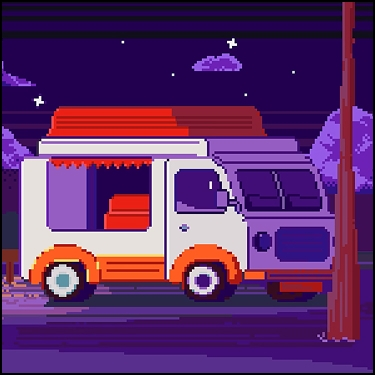

Фритрек и нулевой спринт: Подготовка к работе
</Html>

Это было самое начало пути. На этом этапе важно было проникнуться основами и настроиться на учёбу. И, возможно, подумать, как новые знания могут повлиять на ваше будущее.
Много мотивации учиться, собираю информацию с разных источников про веб-разработку. Начинаб свой путь в Практикуме.